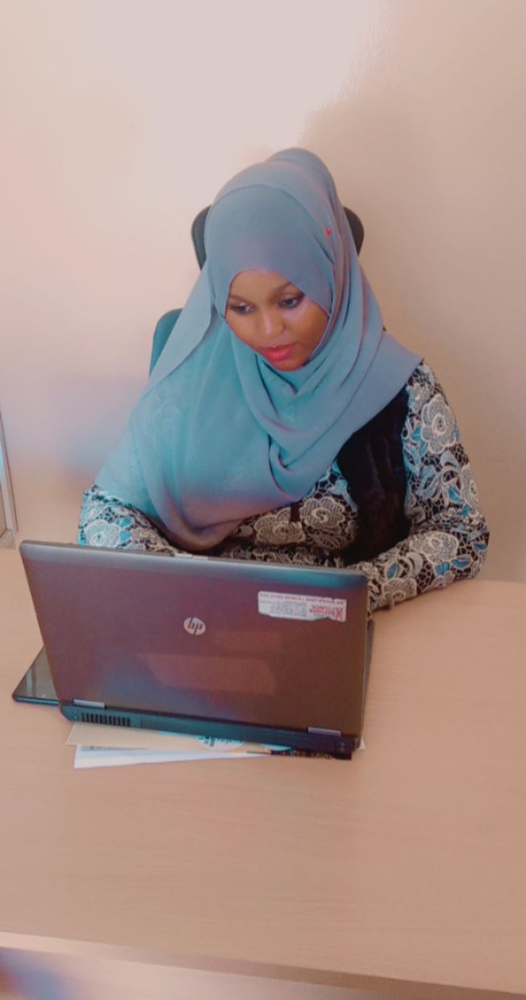

I am an outgoing and energetic (ask anybody) young professional, seeking a
career that fits my professional skills, personality, and murderous tendencies.
I would like to: To excel among professionals where i can utilize my skills with strong commitment and dedication , for the progressive growth of the company.
To work in a challenged and dynamic environment that offers opportunity for personal growth and advance in areas where success is the key
- Education
-
From :September 2017 - December 2021
Work, Masinde Muliro University of Science and Technology,
Kakamega
Major: Awaiting graduation in September
Minor:Certificate in HTS
- Employment History
-
Social Work, Dr. Warsame
From : May 2021 - July 2021
- Assisted in provision of individual and group counselling services and other
short term therapeutic services to patients.
-
Assist in conducting psychological assesments and Mental status Examinations .
- Ensured appropriate psycho social assesment and diagnosis of all the psychological cases are in line with hospitals requirement
-
Assisted in assesments for provision of Social assistance.
-
Ensured timely, quality and comprehensive reports for official work done.
-
conducted home visits and follow up of my patients.
-
mentored Tawakal youth, where every Friday we held a session on current matters that affect the youth of this generation
-
Trained 500 people on life skills in different organised groups in Nairobi.
-
Organissed Muslim Women Fora's where we empower adolescent Muslim girls and women with information on sexual and reproductive health including gender based violence and create awareness on Mental health.
-
Developing and designing of Amina and Ali Cse toolkit which is used by Muslim faith leaders in Madrasahs.
- References
- Dr. Abdulkadir Warsame from Tawakal Medical clinic
tawakal clinic@hotmail.com | 0722534272